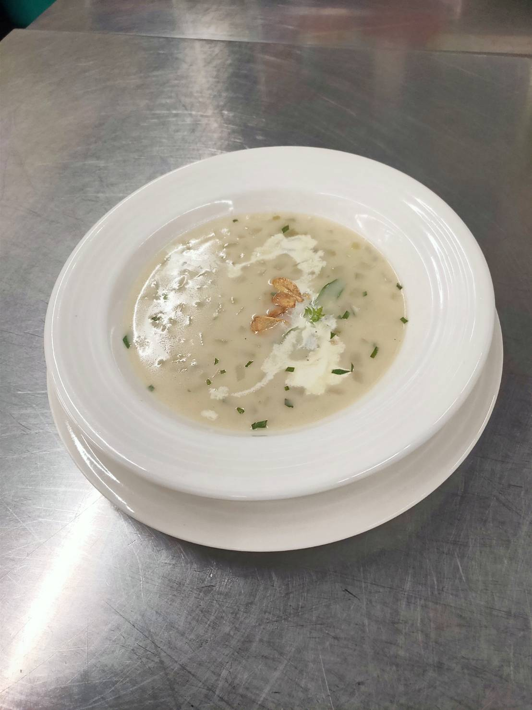

製作方法:
煮水加胡椒粒+月桂葉+西芹，滾後小火加洋蔥頭（15分鐘），洋蔥切丁（多的煮湯，
少的放豬排），蒜頭切片跟（碎加湯），西芹切碎加湯，馬鈴薯切兩片1.5公分其餘切片丁
，小番茄切十字後醃製：胡椒粉，橄欖油適量，少許黑胡椒粗粉，少許百里香，少許鹽，
九層塔挑一片最漂亮的做裝飾，（肉拍一拍醃製：少許橄欖油，少許梅林，少許鹽，
少許白胡椒粉）熱鍋加奶油，一匙半的麵粉，攪拌，拌勻開火，冒泡泡即可，高湯2/3至鍋子
，攪拌熱鍋加奶油，加入洋蔥，大蒜，西芹菜，加高湯，加全部麵糊湯，馬鈴薯片，
煮15分，蓋起來，2大匙鮮奶油，一小匙鹽

地中海酒會海鮮
德克薩斯豬排 佐特製風味醬
羅西尼漢堡排
心得